Tower of Entropy · A3
Capturas reais. Avaliação estética pendente. Há fallbacks e candidatos bloqueados; este painel não significa 100% de cobertura.
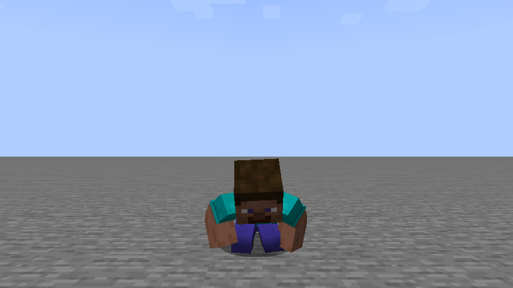
crouch_move · front · 2s · UAL_crouch_move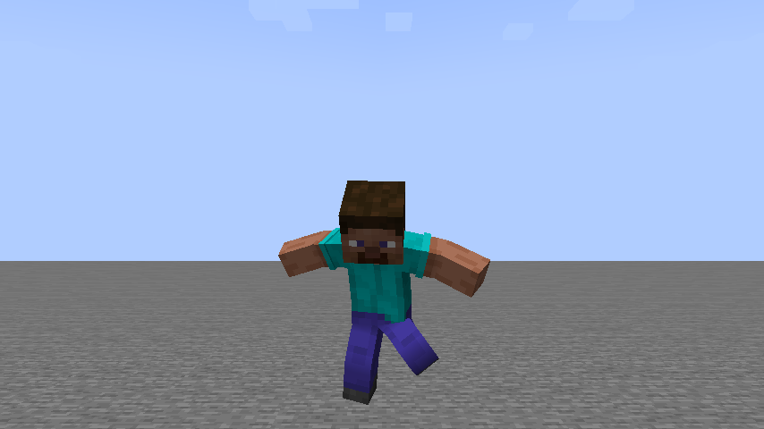
jump · front · 1.6s · UAL_jump_loop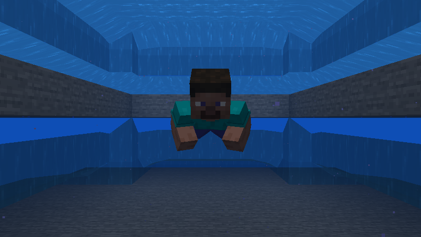
swim · front · 2.5s · UAL_swim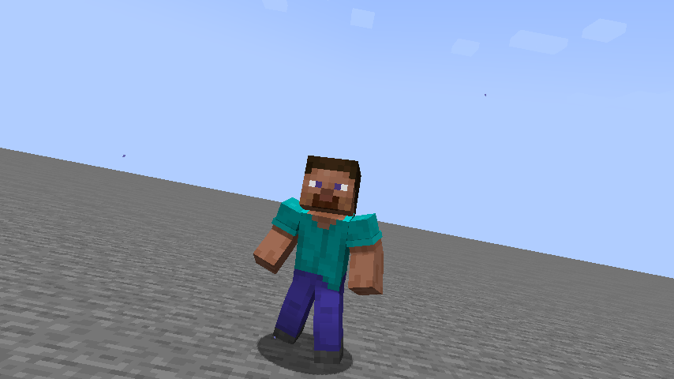
hit · front · 1.4s · UAL_hit_chest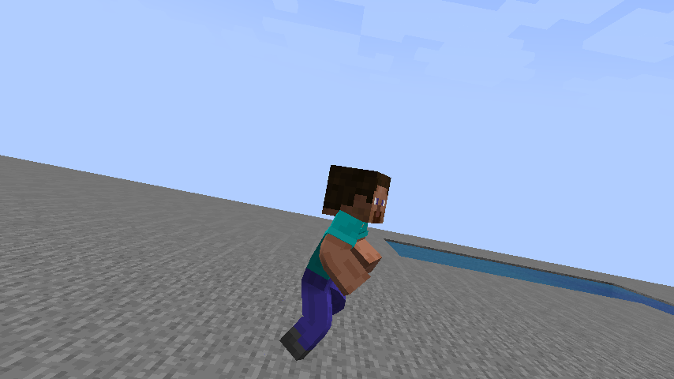
knockback · side · 1.4s · UAL_hit_knockback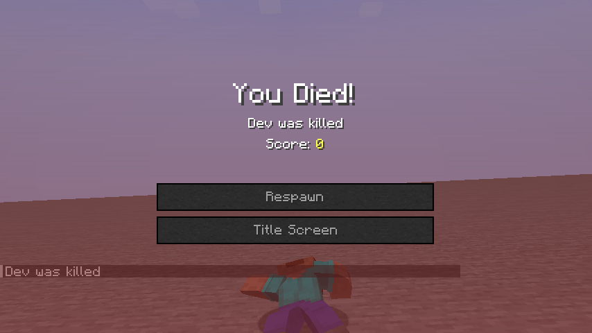
death · front · 2s · UAL_death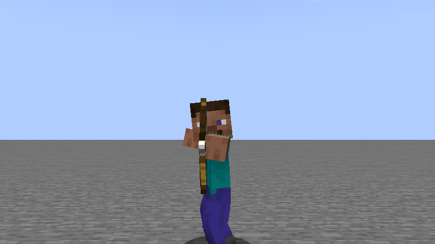
bow_shot · front · 2.5s · UAL_bow_hold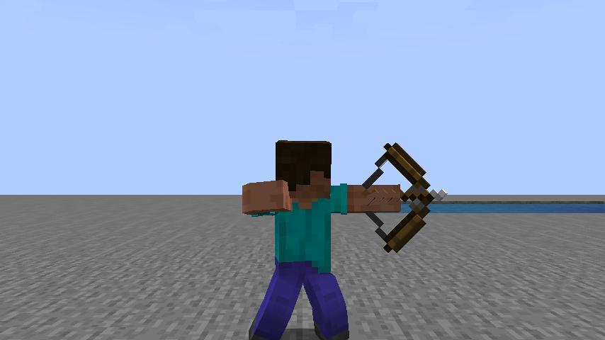
bow_shot · side · 2.5s · UAL_bow_hold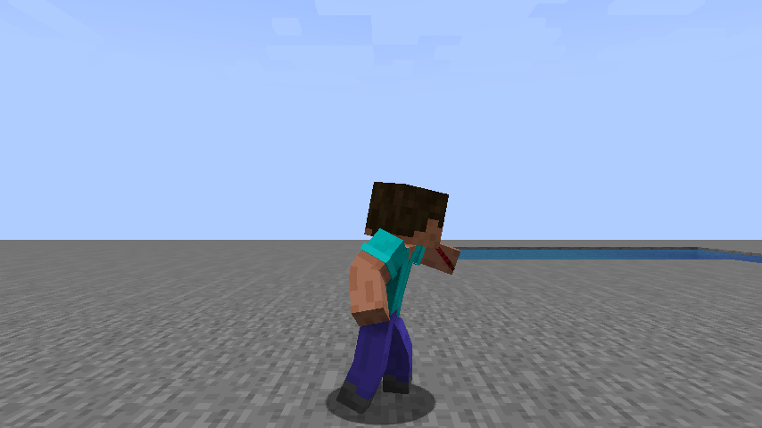
consume · side · 2s · UAL_consume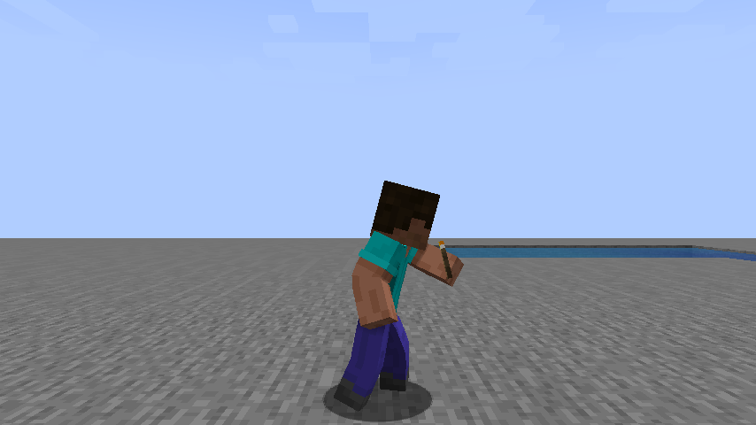
torch · side · 2.5s · UAL_torch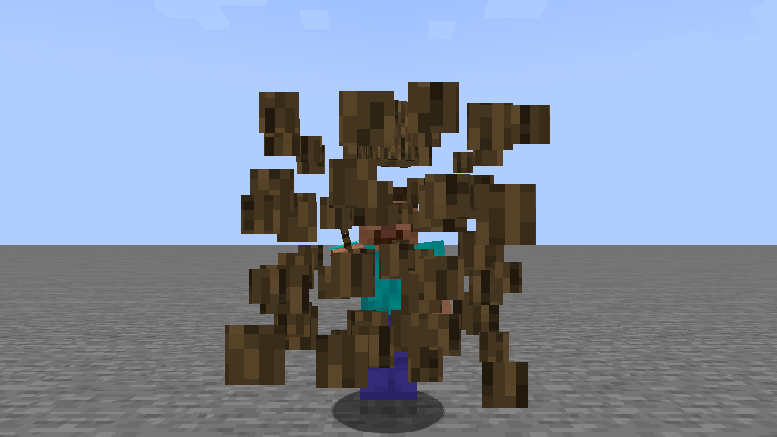
chop · front · 1.6s · VANILLA / FALLBACK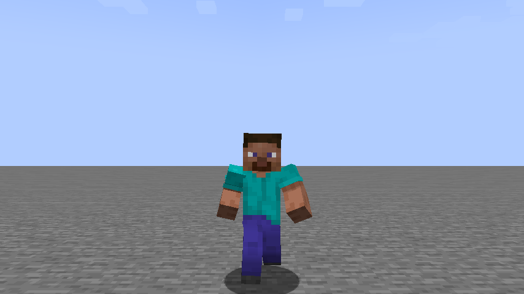
backward · front · 2s · UAL_backward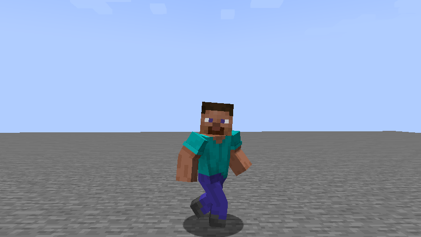
left · front · 2s · UAL_strafe_left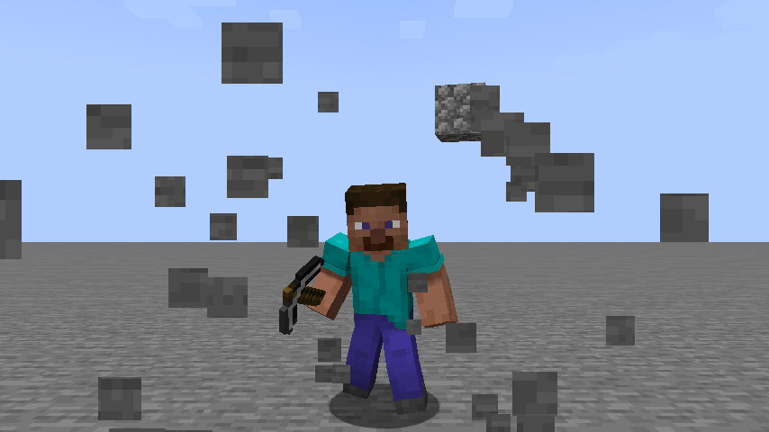
pickaxe · front · 2s · UAL_idle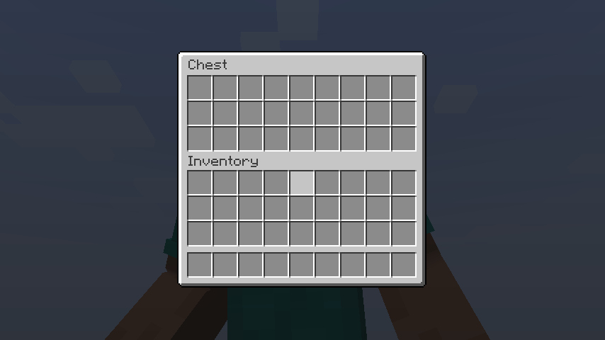
chest · front · 2s · UAL_idle